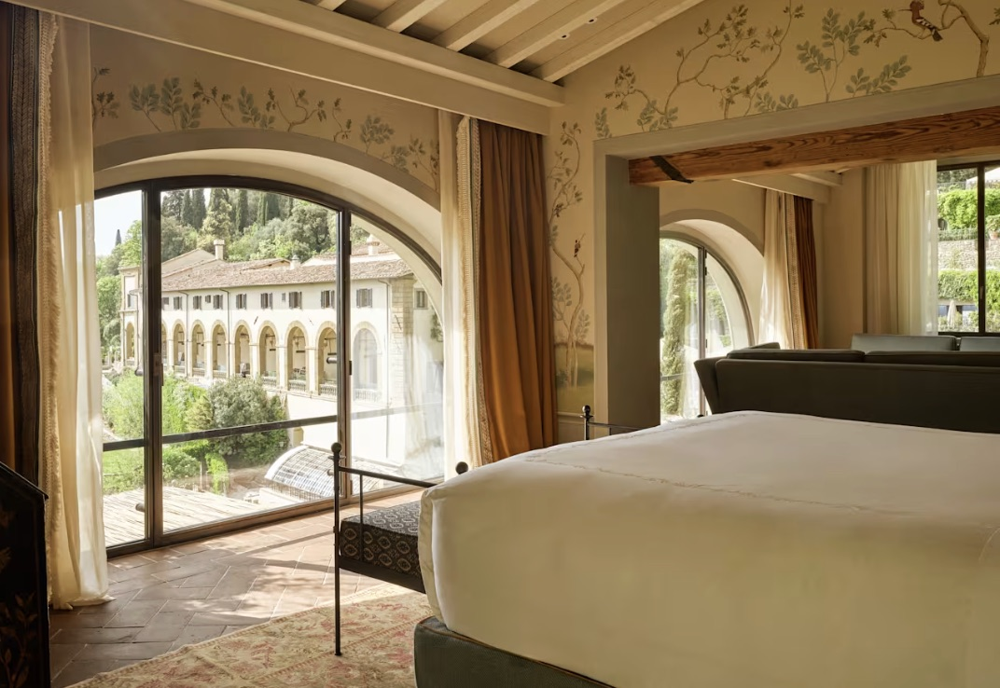

A former 15th-century monastery in the Fiesole hills above the city — recently renovated, with the best views in Florence.
On my featured Italy page, Villa San Michele leads the Florence section, and my one-line case for it hasn't changed: a former 15th-century monastery in the Fiesole hills above the city, recently renovated, with the best views in Florence — and a private shuttle into town.
That's the whole proposition. Florence's city-center hotels give you the streets; Villa San Michele gives you the city itself, laid out below your terrace, with the Duomo catching the evening light. The recent renovation brought the rooms fully current without disturbing the monastery bones — the facade is attributed to Michelangelo's school, and it reads that way.
I'm a preferred partner of Belmond, so the upgrades, breakfast, and credits follow my clients up the hill — and the shuttle solves the only objection anyone ever raises about staying above the city.

The best views in Florence. The city spread below the Fiesole hills — the reason this property leads my Florence list.
The monastery itself. A 15th-century building with a facade attributed to Michelangelo's school — recently and beautifully renovated.
The private shuttle. Into the city center on a loop — hilltop serenity without hilltop logistics.
You're above the city, not in it. The shuttle makes it easy, but if you want to walk out into the streets, look at Hotel Lungarno — my riverside pick steps from everything.
Seasonal by nature. The terraces and pool are the point — spring through fall is when this property sings.
Best as Florence's romantic chapter. I often pair a few Fiesole nights with a Tuscany estate — Castiglion del Bosco is the natural next stop.
The best views in Florence, from a renovated 15th-century monastery — the city's most romantic address isn't in the city at all.
Rates through me are identical to booking direct — the perks are not. As a Fora advisor, my clients receive a space-available upgrade, daily breakfast, and a hotel credit — plus my direct line to the team on property before and during your stay.
Check Availability